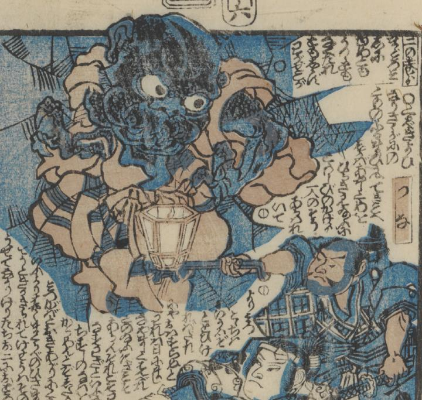

大きな顔をした人型の土蜘蛛を、渡辺綱が手燭で照らし出している。土蜘蛛の背後と着物には蜘蛛の巣模様が描かれている。
著作者：一龍齋國久／出典：親書誌：U426_nichibunken_0431：頼光一代記圖繪／日付：2016／資源識別子：U426_nichibunken_0431_0006_0000
Copyright (c)2010- International Research Center for Japanese Studies, Kyoto, Japan. All rights reserved.